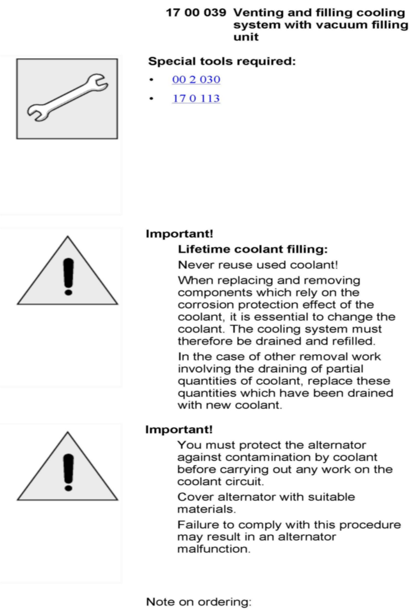
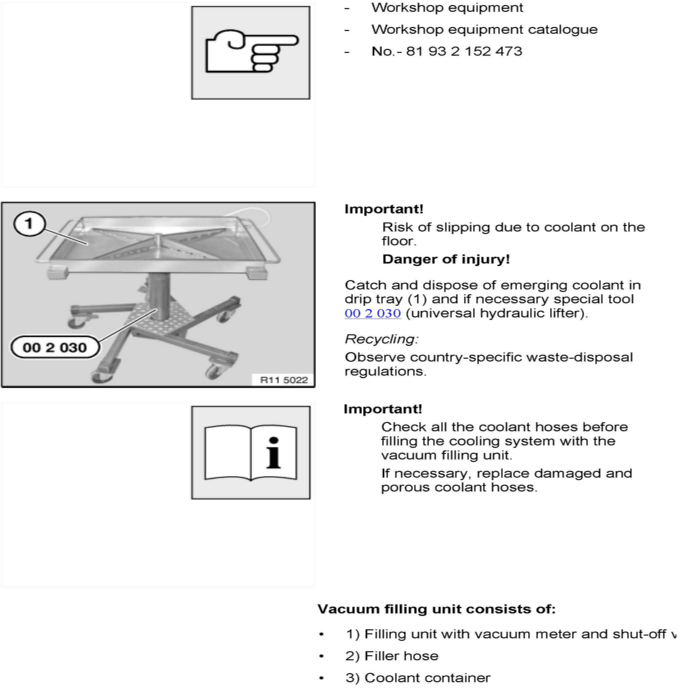
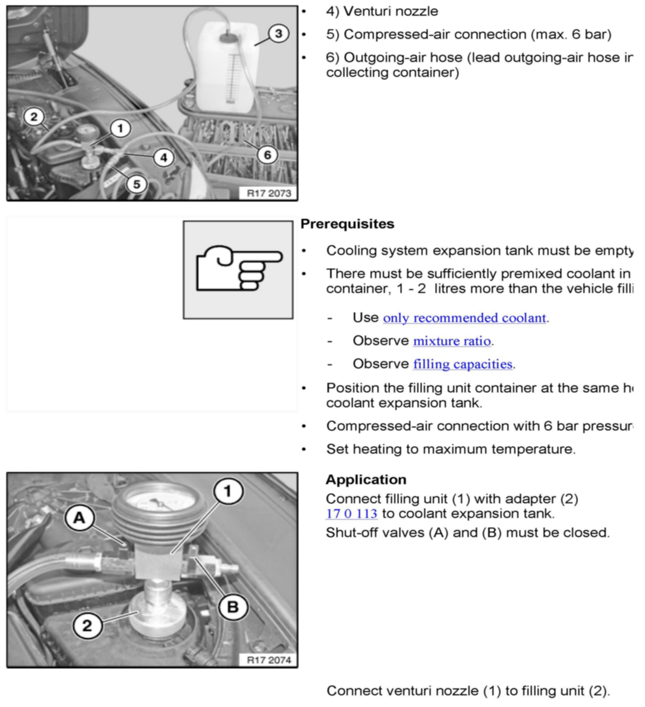
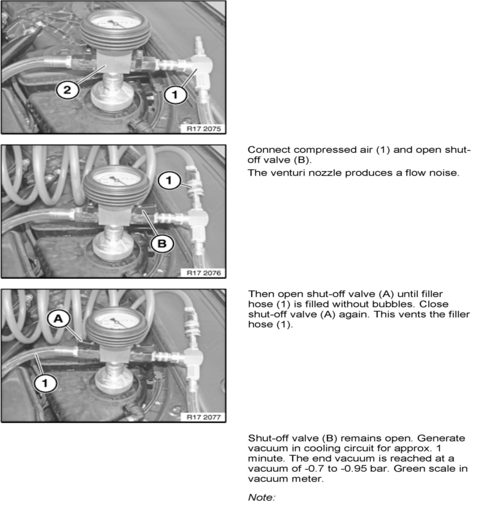
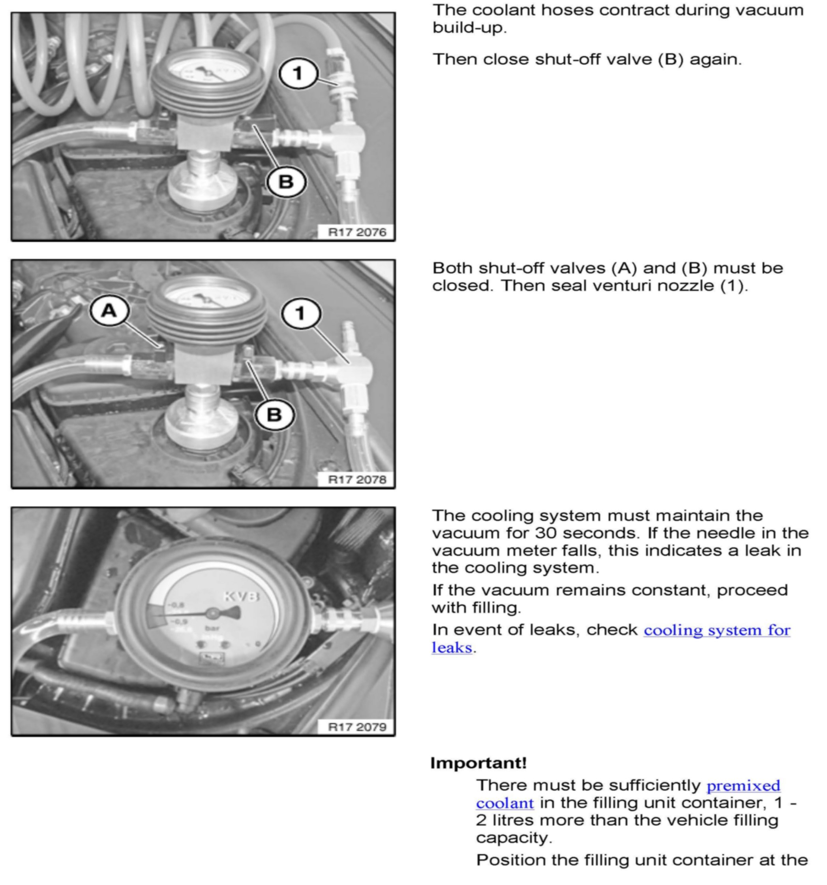
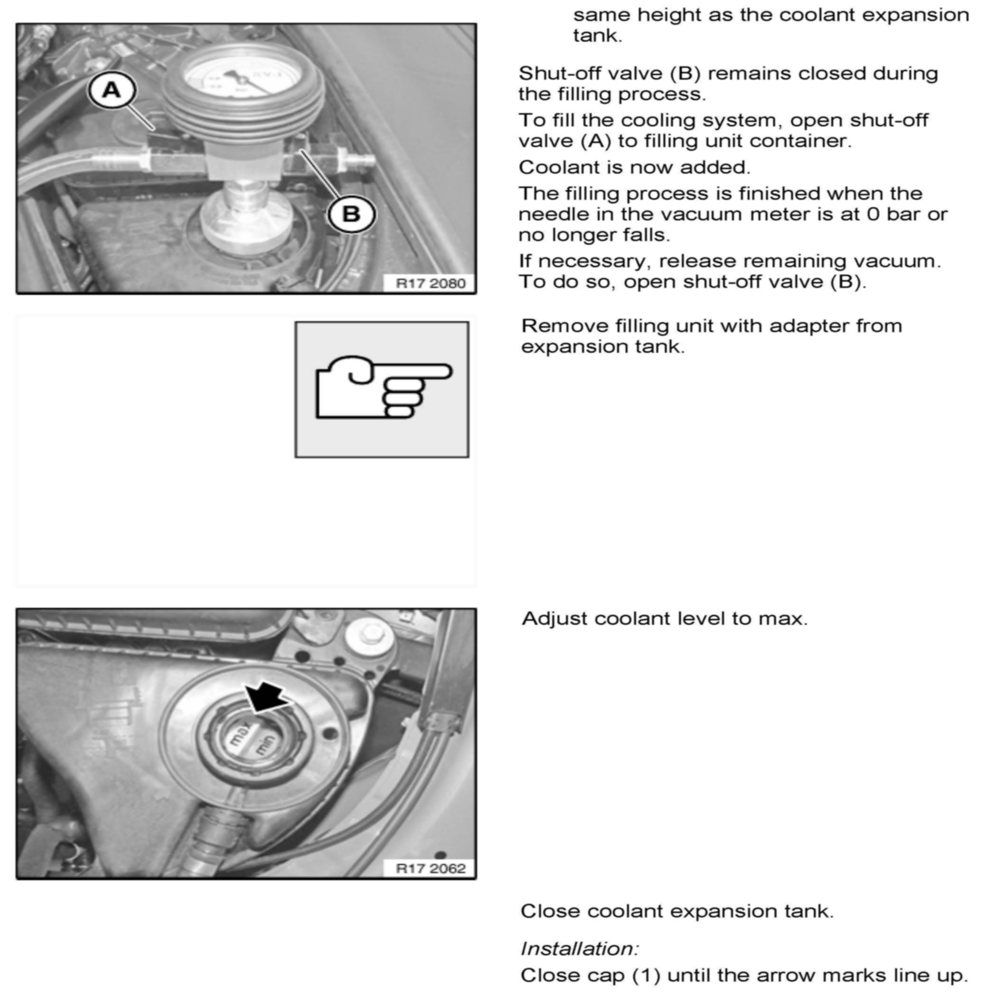
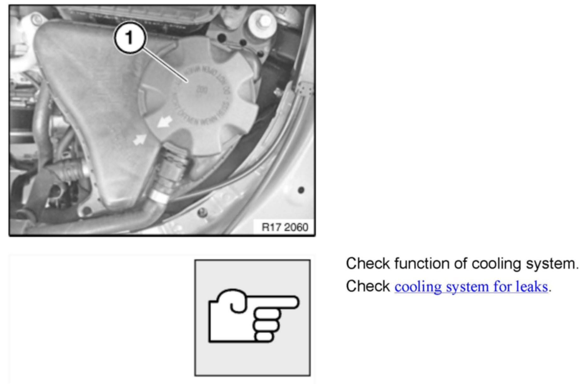

Cooling System - Proper Cooling System Service Procedure
SI B 17 01 10Cooling System
March 2010
Technical Service
SUBJECT
Proper Evacuation and/or Filling of Cooling System after Repairs
MODEL
All
SITUATION
It can no longer be assured that all air is bled from a modern cooling system after it has been opened for repairs. This can result in poor performance of the cooling system and also erratic operation of systems utilizing cooling system temperature values. A special tool has been developed that ensures complete evacuation of all air in the system prior to filling, and also validates if the system is free of leaks prior to filling with coolant.
PROCEDURE
The Coolant Vacuum Charger tool P/N 81 39 2 152 470 (SI B04 34 08) must be used after completing major cooling systems repairs, or when the cooling system is drained and needs to be refilled with fresh coolant. Repair instructions for operating the vacuum charge unit are in the attachment below.
WARRANTY INFORMATION
For information only
ATTACHMENTS







Attachment - B170110_RA_17_00_039.